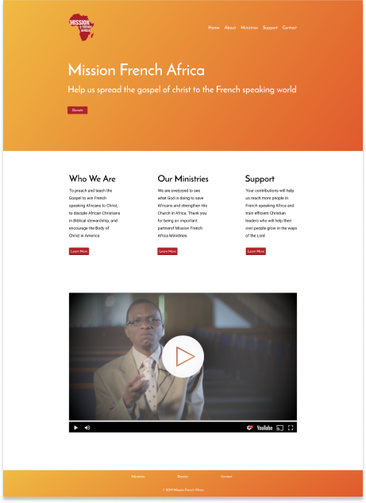
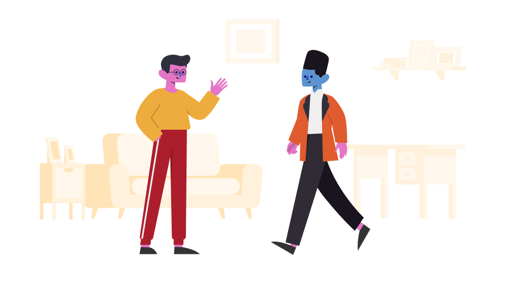

Mission French Africa
December 2019Problem
Mission French Africa’s website is outdated, and needs better usability. The goal is to update and increase functionality for visitors.
Context
Mission French Africa is a non profit organization that needed an update. The website had an old and unorganized look.
Objective
I was responsible for reorganizing and updating the UI of Mission French Africa’s website. The whole process took 5 weeks.
Freestyle UI
Home
A lot is happening on the home page. Keeping design simple is always a great bet. I sought to decrease the clutter and highlight the important parts to the page.

I wanted to highlight the most important elements in the home page.
I have a call to action to donate at the top instead of the bottom.
The most engaging piece of content is the video from the old website.
This explains very well what Mission French Africa is, and a user doesn’t have to go a page deep in order to discover who they are.
I have a call to action to donate at the top instead of the bottom.
The most engaging piece of content is the video from the old website.
This explains very well what Mission French Africa is, and a user doesn’t have to go a page deep in order to discover who they are.